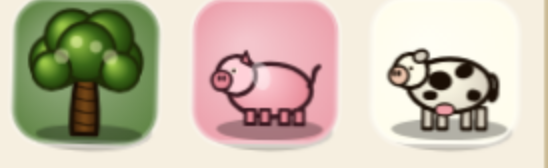
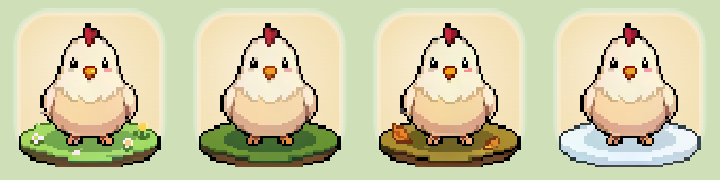
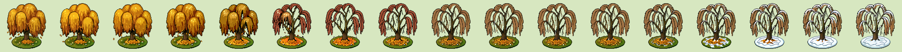

puzzleDrag2 · ProposalsAll proposals › 09 · Animated iconsreview both pixel & painterly · grounded in src/
Proposals · Concept study 09
Animated icons — one living language
The game already ships genuinely lovely motion — season morphs, two-tier idle "gestures", a
walking wagon. But that motion is spoken in several different visual languages at once, and the
"aliveness" is uneven: the board breathes while the chrome is frozen. This study reviews both the pixel
and the non-pixel (painterly / flat-vector) art, says what reads as out of line with the cozy
storybook direction, and proposes one coherent animated language — with full season + idle worked
examples for two subjects. It extends the static-icon unification on X2 ·
Iconography into the motion dimension.
Concept in one line. Keep the beautiful
hand-drawn vector season-morph + idle system as the game's one animated language (it's authored in the
same painterly idiom as the parchment UI); make the crisp pixel route an explicit opt-in "retro skin",
not a competing default medium; unify the two static icon families by size (X2); and give a restrained
idle to a few chrome icons so aliveness is consistent rather than board-only. Two worked examples — an oak and a
hen — show the season lifecycle and the idle loop the way the code actually does them.
IA1The five registers on screen today
IA1REVIEWread first
One <Icon> component, but five illustration registers — two static, three animated
Every icon flows through one component (ui/Icon.tsx:246), which
dispatches to one of two static families purely by key identity — a flat-vector
design.* SVG set (~50 keys, 24×24 viewBox) and a painterly Canvas-2D iconRegistry set
(hundreds of keys, baked from a 64px box). On the board, motion adds three more animated systems,
switched by a 3-way tileArtMode (static | animated | pixel,
seasonalArt.ts:96): a hand-drawn vector season-morph + idle set (80 tiles),
a baked PixelLab pixel-sprite spritesheet set (~48 subjects), and a cheap ambient sway (rigid
sprite rotation) for plain tiles. (There is a fourth, dev-panel-only animation registry that
never renders in-game — iconAnimations.ts.) And, notably, the game uses no OS emoji
anywhere — the emoji in these mock-ups stand in for the real canvas/vector art.
~48 subjects; the whole board under tileArtMode:'pixel'. public/seasonal-tiles/*, seasonalArt.ts
Ambient sway
animated
Rigid whole-sprite rotation under a staggered bell envelope — the art itself is static.
Plain tiles with look.sway. TileObj.ts:196
Now — two mediums in one game (real renders)
NOW — painterlythe default board look

The default board and all chrome are painterly — soft shading, rounded forms,
drop-shadows, at home with the parchment + Fraunces UI. (These sit on the saturated category squares
B1 retires — ignore the backdrop; look at the drawing.)
NOW — pixelthe pixel tile-art mode

The pixel route (baked PixelLab sprites) is a crisp, hard-edged pixel grid —
beautiful, but a fundamentally different medium from the painterly art above and the vector UI.
One flip of tileArtMode swaps the entire board between these two languages.
IA2What reads as out of line
IA2S3diagnosis
Three mismatches: pixel vs painterly medium, flat vs painterly at one size, and board-only aliveness
None of the art is bad — each register is well-made. The problem is that they don't
agree, and the disagreements are exactly the kind the eye reads as "unfinished" on a cohesive storybook game.
a · Pixel vs. painterly medium
The pixel route (imageSmoothingEnabled=false, hard pixel grid)
is a different medium than the painterly parchment/Fraunces UI and the painterly board icons. On its
own it's charming; mixed in, it reads as a retro skin bolted onto a storybook. It's the sharpest mismatch.
b · Flat vs. painterly at one size
The design.* flat SVG and the painterly canvas set duplicate the same
subjects and render at the same px — the HUD draws a flat SVG coin (14px) beside a painterly canvas
XP glyph (12px). Two languages, one scale (Hud.tsx:229,255). This is the
X2 collision, in motion's static substrate.
c · Board-only aliveness
Board tiles animate lavishly (season morphs + two-tier idle), but tools, HUD and nav
icons are static canvas with no idle at all (Tools.tsx:67). The world
breathes; the chrome is frozen — the liveliness is uneven, so the animation reads as a board feature, not a
game character.
The same subject, three ways — pick one voice
NOW — willow, pixelcrisp pixel grid
The willow in the pixel register — hard pixels, dithered ramps. A different hand than the UI.
DIRECTIONthe vector season-morph is already this
🌳
Spring
🌳
Summer
🌳🍂
Autumn
🌲
Winter
The painterly vector route already speaks the UI's language: soft forms, seamless
season morphs, a gentle idle sway (this row is literally swaying — reduced-motion off). Make this
the one animated voice; keep pixel as an opt-in skin.
IA3The concept — one living language
IA3S2Effort M–L
Pick the vector season-morph as the default voice; make pixel an opt-in skin; consistent, restrained idle everywhere
The good news is the strongest option already exists and is the cheapest to commit to: the
hand-drawn vector season-morph + two-tier idle system is authored in the same painterly idiom as the UI
and morphs seamlessly. The concept is to choose it as the one animated language and stop letting
a second medium compete for the default.
A · Vector default + pixel skinRecommended
Make the painterly vector season-morph the default animated board and extend it across
the spawnable roster; keep the pixel route as an explicit "Pixel / retro" toggle (the existing
tileArtMode:'pixel'), presented as a skin, not a quality tier. Pro: one coherent
voice, reuses shipped systems, players who love pixel keep it. Con: vector coverage must reach every
spawnable tile so the default never falls back to a clashing medium.
B · Commit to pixel everywhere
Re-skin the whole game — UI included — to pixel. Pro: total cohesion, a strong
market identity. Con: throws away the painterly parchment/Fraunces direction the rest of the review
protects; highest re-art cost by far. Not aligned with the current look.
C · Keep both, just fix collisions
Leave both mediums as co-defaults; only fix the flat-vs-painterly static split (X2).
Pro: least work. Con: the pixel↔painterly medium clash (the loudest mismatch) survives; the
game keeps reading as two art teams.
Alongside the medium decision, two supporting moves make the language feel like one
character rather than a board feature:
Unify the static families by size, not key — small (<28px) = flat line; large = painterly
matte; the animated showcase shares that matte spec so a still frame of an animated tile matches its icon
elsewhere. This is X2 extended to cover the animation substrate.
Give the chrome a restrained idle — an armed tool breathes/shimmers, a freshly-unlocked nav
item settles once. A little, deliberate, and reduced-motion-gated — enough that the aliveness reads as the
game's, not just the board's.
A restrained chrome idle — the armed tool "breathes" (live demo)
NOWstatic tool tiles
🪓
💣
🪄
Tool icons never move — armed or idle they look identical, so "this tool is ready to fire"
carries no motion cue.
PROPOSEDarmed = a soft breathing glow
🪓
💣
🪄
The armed tool (left) pulses a soft gold glow — a single, calm idle that says "ready" without
the carnival. One shared, reduced-motion-gated idle primitive covers tools, nav and reward chips.
IA4Season + idle — two worked subjects
Both examples describe the motion the code actually performs in the vector route, so a re-review can
check the concept against the live system. The strips below animate — turn on reduced-motion to see the season
stills alone.
IA4-aEXAMPLEtile_tree_oak
Oak — four unmistakable seasons over one constant trunk, a two-tier idle, and a leaf-fall showpiece morph
The oak keeps one trunk and canopy silhouette all year; only the dressing changes. Source:
textures/seasonal/tree/oak.ts.
🌳🌸
Spring · blossom
🌳
Summer · deep green
🌳🍂🍁
Autumn · fire + drift
🌲❄️
Winter · bare + snow
Season stills
Spring — lime canopy with pink/white blossom puffs + fallen petals.
Summer — deep saturated round green crown.
Autumn — gold→orange→red fire ramp with a steady spiralling leaf drift.
Winter — bare dark wet branches under white snow ridges + hanging icicles.
Idle + transitions
Common idle (~6s) — a ~13px canopy lean-and-return with a settle bob.
Rare special (~18s) — a robin lands on a branch, looks around, flits off (~1.3s) — except
autumn, where the rare event is a gust that blows a leaf flurry off the crown.
Morph showpiece — autumn→winter (3.2s): three leaves fall in sequence as the branches bare and snow
settles; then the idle resumes at rest with no snap.
IA4-bEXAMPLEtile_bird_chicken
Chicken — identity-locked hen; seasons change only dressing & fluff; a peck + hop-flap idle
The hen's silhouette is constant every season — a plump white/cream body, red comb, orange beak.
Only plumage volume, the ground pad, light wash, and bold seasonal dressing change. Source:
textures/seasonal/bird/chicken.ts.
NOW — pixel routereal render, four seasons
The shipped pixel hen already nails "same character, seasonal dressing" — spring flowers, summer
grass, autumn leaves, winter snow pad. The concept keeps this design, in the painterly vector voice.
DIRECTION — vector + idlepeck (common) · hop-flap (rare)
🐔
Spring · sleek
🐔
Summer
🐔
Autumn · leaf
🐔❄️
Winter · puffed
Same hen, seasonal fluff + dressing (winter: puffed, scarf, breath-fog). The three left cells run
the common idle — a ~6s peck (head dips ~12px, body squash, tail flick); the winter cell runs the
rare ~18s hop+wing-flap (~16px up). Raised-cosine windows make every loop return exactly to the
season still — no snap.
IA4-cEXAMPLEthe seamless morph
Willow — a real season→season transition, frame by frame
The season change isn't a cross-fade — it's an authored morph. Below is the shipped
autumn→winter transition for the willow, played out as its actual frames: the golden canopy sheds to bare branches
over snow, then settles into the winter idle. This is the seamless morph→idle handoff the vector route does for
every subject (seasonalTiles.ts seasonalVectorAdvance).

Autumn → winter, left to
right: the canopy shifts gold→russet, sheds leaf by leaf, branches bare, snow builds on the pad. Every subject has
three such forward morphs (Spr→Sum, Sum→Aut, Aut→Win); a skipped or backward step snaps instead.
IA5Where it lands in code
IA5S2implementation
The moves are policy + coverage, not a rewrite — the systems already exist
Implementation
Default voice: present tileArtMode (seasonalArt.ts:96) as
"Storybook" (vector, default) vs an opt-in "Pixel" skin in Settings (feeds AF5);
make sure the vector season-morph set (seasonal/showcaseTiles.ts) covers every
spawnable tile so the default never falls back to a clashing pixel bake.
Static split by size: make size a first-class input to the family decision at
ui/Icon.tsx:246 (below ~28px → flat design.*; at/above → painterly
matte), and author the matte bake spec once — shared by the canvas set and the animated showcase
stills — see X2.
Restrained chrome idle: add one reduced-motion-gated idle primitive (breathe/settle) and apply it to
the armed-tool tile (ui/Tools.tsx:67), a freshly-unlocked nav item, and reward
chips — nothing more, so the HUD stays calm.
Keep the good parts: the two-tier idle timing (textures/seasonalIdleTiming.ts),
the seamless morph→idle state machine (seasonalTiles.ts seasonalVectorAdvance) and
the deterministic per-cell stagger already do the hard work — this concept chooses which language to
spend them on, it doesn't re-implement them.
Retire the confusion source: the dev-only iconAnimations.ts concept batches never render
in-game (iconRegistry.ts:49) — keep them in the Dev Panel, but don't let their
existence imply a third in-game animated style.
Scope note: this is a direction study, not a per-tile art
spec. The two subjects above are worked examples of the season lifecycle + idle; the seasonal-tile pipeline skills
(seasonal-vector-tile, seasonal-tile-pipeline, pixel-art-animation) are the
production path once the direction is chosen.